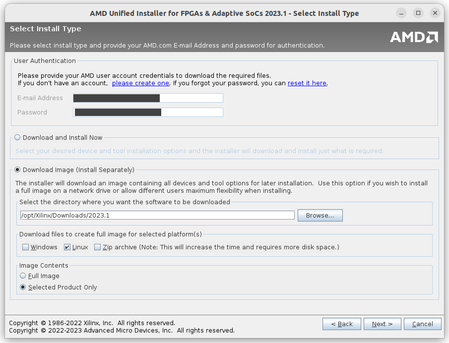
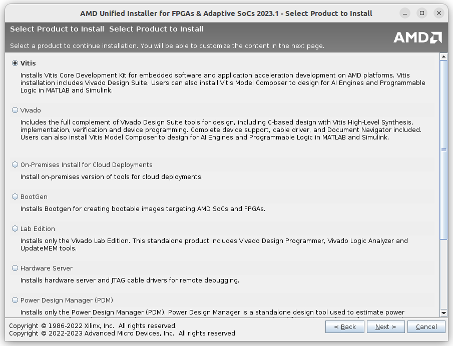

การติดตั้งซอฟต์แวร์ AMD / Xilinx Vivado Design Suite สำหรับ Ubuntu#
Keywords: Xilinx Vivado Design Suite, Xilinx FPGAs / SoCs
- ซอฟต์แวร์สำหรับการออกแบบวงจรดิจิทัลและใช้งานชิป AMD / Xilinx FPGAs
- การติดตั้งซอฟต์แวร์ AMD / Xilinx Vivado Design Suite
- เริ่มต้นใช้งาน Vivado ML Edition
- การอัปโหลดไฟล์โดยใช้ OpenOCD
▷ ซอฟต์แวร์สำหรับการออกแบบวงจรดิจิทัลและใช้งานชิป AMD / Xilinx FPGAs#
AMD / Xilinx เป็นหนึ่งในรายชื่อผู้ผลิตชิปประเภท FPGAs (Field-Programmable Gate Arrays) และทางบริษัทก็ได้พัฒนาซอฟต์แวร์เพื่อใช้งานกับชิปดังกล่าวของบริษัทด้วย มีทั้งเวอร์ชันของซอฟต์แวร์ที่ใช้งานได้ฟรี และเวอร์ชันที่ผู้ใช้จะต้องเสียค่าลิขสิทธิ์ในการใช้งาน
ตัวอย่างซอฟต์แวร์ของ AMD / Xilinx ได้แก่
- Vivado Design Suite (Initial Release: April 2012)
เป็นซอฟต์แวร์สำหรับการออกแบบวงจรดิจิทัล ผู้ใช้สามารถออกแบบวงจรดิจิทัลโดยใช้ภาษา HDL (VHDL / Verilog / SystemVerilog)
และใช้งานกับชิป FPGAs / SoCs / Adaptive SoCs
- 7-Series FPGAs: Artix, Kintex, Virtex-7, Spartan-7
- Zynq SoCs: Zynq-7000 / Zynq-UltraScale MPSoC/RFSoC
- Versal ACAP (Adaptive SoCs): Versal Prime / Premium / AI Core Series
- Vivado ML Edition เป็นเวอร์ชันที่อัปเกรดจาก Vivado Design Suite เพื่อรองรับการใช้งานชิป Versal ACAP Adaptive SoCs ซอฟต์แวร์แบ่งเป็นสองเวอร์ชันให้เลือกใช้งานคือ Standard Edition (free) และ Enterprise Edition
- Vitis HLS Tool เป็นเวอร์ชันที่อัปเกรดจาก Vivado HLS Tool ซึ่งเป็นคอมไพเลอร์สำหรับการสังเคราะห์วงจรในระดับสูง หรือ High Level Synthesis (HLS) และแปลงโค้ด C/C++ ให้เป็นโค้ดในภาษา HDL ในระดับ RTL (Register-Transfer Level) ได้โดยอัตโนมัติ
- AMD Vitis Unified Software Platform
เป็นซอฟต์แวร์รวมที่ประกอบด้วยซอฟต์แวร์ เช่น
- Vitis Core Development Kit เป็นซอฟต์แวร์สำหรับการพัฒนา แอปพลิเคชันฝังตัว (Embedded Software Development) และเขียนโค้ดด้วยภาษา C/C++ หรือ OpenCL สำหรับตัวประมวลผลหรือซีพียูภายในชิป FPGAs / SoCs / Adaptive SoCs
- Vivado Design Suite / Vivado ML Edition สำหรับการออกแบบวงจรดิจิทัล
รูป: การจำแนกประเภทย่อยของชิป FPGAs / SoCs ที่ได้มีการผลิตโดย AMD / Xilinx

รูป: ซอฟต์แวร์และฮาร์ดแวร์ที่เกี่ยวข้องกับการพัฒนาแอปพลิเคชัน AI / ML (Source: AMD / Xilinx)

รูป: Vivado Design Suite - System-Level Design Flow (Source: AMD / Xilinx)
บทความนี้นำเสนอ การใช้งานซอฟต์แวร์ที่มีชื่อว่า Vivado ML Edition เพื่อการออกแบบวงจรดิจิทัล และนำไปใช้กับบอร์ด FPGA เช่น Artix-7 หรือ Spartan-7 ซอฟต์แวร์นี้สามารถดาวน์โหลดมาใช้ได้ฟรี มีให้เลือกใช้สำหรับระบบปฏิบัติการ Windows หรือ Linux
แนะนำให้ผู้ใช้ดาวน์โหลดไฟล์ Web Installer (AMD Unified Installer for FPGAs & Adaptive SoCs) จากเว็บไซต์ของบริษัท AMD / Xilinx ผู้ใช้จะต้องมีบัญชี (User Account) หรือ ลงทะเบียนผู้ใช้ก่อนจึงจะดาวน์โหลดไฟล์ได้
ในบทความนี้ได้เลือกใช้ Vivado ML Edition 2023.1 และนำมาใช้กับระบบปฏิบัติการ Linux / Ubuntu 22.04 LTS (64-bit) และเจาะจงใช้งานเฉพาะการออกแบบวงจรดิจิทัลโดยใช้ภาษา HDL เป็นหลัก แต่ถ้าจะใช้ชิป FPGA & SoC FPGA ที่ต้องมีการเขียนโค้ดสำหรับการพัฒนา Embedded Software ก็แนะนำให้ติดตั้งและใช้งาน AMD Vitis Unified Software Platform
▷ การติดตั้งซอฟต์แวร์ AMD / Xilinx Vivado Design Suite#
ไฟล์ที่ใช้ในการติดตั้งคือ Xilinx_Unified_2023.1_0507_1903_Lin64.bin
(Linux Self Extracting Web Installer, Size: 265.94 MB)
และใช้สำหรับการติดตั้งโปรแกรมแบบ Web Installation
ทำคำสั่งเพื่อสร้างไดเรกทอรีใหม่สำหรับการติดตั้งซอฟต์แวร์ของ AMD/Xilinx
เช่น /opt/Xilinx
# Create a new directory for Xilinx software.
$ sudo mkdir /opt/Xilinx
# Change the owner of the directory to the current user.
$ sudo chown -R $USER:$USER /opt/Xilinx
จากนั้นให้ทำคำสั่งเพื่อเริ่มต้นขั้นตอนการติดตั้งโปรแกรม
# Make the .bin file an executable file.
$ chmod +x ./Xilinx_Unified_2023.1_0507_1903_Lin64.bin
# Run the Web installer program.
$ ./Xilinx_Unified_2023.1_0507_1903_Lin64.bin
คำแนะนำ:
- โดยปรกติแล้ว ในการติดตั้งโปรแกรมจะมีการดาวน์โหลดไฟล์และติดตั้งไปตามลำดับในคราวเดียวกัน
แต่แนะนำให้ดาว์นโหลดไฟล์สำหรับการติดตั้งโปรแกรมจากเซิร์ฟเวอร์ของ AMD/Xilinx
มาเก็บไว้ที่เครื่องคอมพิวเตอร์ของผู้ใช้ก่อน เช่น เก็บไว้ในไดเรกทอรี
/opt/Xilinx/Downloads/2023.1/จากนั้นจึงติดตั้งโปรแกรมโดยใช้ไฟล์ที่ดาวน์โหลดมาเสร็จแล้วโดยทำคำสั่งxsetupจากไดเรกทอรีดังกล่าว
# Install necessary packages for Ubuntu 22.04.
$ sudo apt-get install -y libtinfo5 libncurses5
# Run the program installer.
$ /opt/Xilinx/Downloads/2023.1/xsetup
ตัวอย่างขั้นตอนการดาวน์โหลดไฟล์มายังคอมพิวเตอร์ของผู้ใช้
รูป: หน้าต่างเริ่มต้นสำหรับการติดตั้งโปรแกรม

รูป: เลือกไดเรกทรอรีสำหรับการดาวน์โหลดและเก็บไฟล์สำหรับการติดตั้ง

รูป: เลือก Vitis ซึ่งจะรวม Vivado ML Edition อยู่ด้วย
รูป: เลือก Vitis Unified Software Platform
รูป: เลือกดาวน์โหลดทุกตัวเลือก (หรือเลือกบางรายการเพื่อลดการใช้งานพื้นที่ในฮาร์ดดิสก์)
ในบทความนี้ จะเลือกใช้เฉพาะซอฟต์แวร์ Vivado Design Suite สำหรับการออกแบบวงจรดิจิทัล ด้วยภาษา VHDL / Verilog / SystemVerilog และเลือกตระกูลของชิป FPGA ของบริษัท AMD / Xilinx ที่คาดว่าจะใช้งาน (ชิปบางตระกูล หากไม่ต้องการใช้ ก็ไม่จำเป็นต้องเลือกติดตั้ง Device Files สำหรับชิปรุ่นดังกล่าว)

รูป: เลือกซอฟต์แวร์ที่จะติดตั้งเป็น Vitis หรือเฉพาะ Vivado ก็ได้

รูป: เลือก Design Tools และ Devices ที่ต้องการจะใช้งาน

รูป: ยอมรับเงื่อนไขในการใช้งานซอฟต์แวร์ และทำขั้นตอนถัดไปเพื่อเริ่มการติดตั้งโปรแกรม
เมื่อได้ติดตั้งโปรแกรมได้สำเร็จแล้ว ให้ทำขั้นตอน License Setup โดยการเรียกใช้งานโปรแกรม AMD License Manager
ขั้นตอนถัดไปคือ ผู้ใช้จะต้องไปยัง Xilinx Product Licensing Site เพื่อขอสร้างไฟล์ลิขสิทธิ์ (License File) ซึ่งเป็นแบบ Node-locked สำหรับการใช้งานซอฟต์แวร์ได้ฟรี
ผู้ใช้จะต้องกรอกข้อมูลเกี่ยวกับเครื่องคอมพิวเตอร์ที่จะใช้งาน โดยจะต้องระบุหมายเลข NIC
หรือ MAC Address ของเครื่องคอมพิวเตอร์ที่จะใช้งาน
เมื่อกรอกข้อมูลและส่งข้อมูลเข้าระบบแล้ว ผู้ใช้จะได้รับไฟล์ xilinx.lic ผ่านทางอีเมล์ตามที่ได้ลงทะเบียนเอาไว้
แล้วให้นำไปใส่ไว้ในไดเรกทอรี $HOME/.Xilinx/

รูป: เมื่อกดปุ่ม Connect จะเปิดเว็บเบราว์เซอร์ไปยังเว็บไซต์ของ AMD เพื่อขอไฟล์ลิขสิทธิ์ (License File) สำหรับเครื่องผู้ใช้

รูป: การตรวจสอบไฟล์ลิขสิทธิ์ เมื่อได้รับมาผ่านทางอีเมล์และติดตั้งในเครื่องของผู้ใช้แล้ว
รูป: หน้าต่างหลักของ Vivado ML Edition และพร้อมใช้งานแล้ว
อีกขั้นตอนหนึ่งที่สำคัญคือ การติดตั้งไฟล์สำหรับใช้งาน Xilinx Platform Cable USB Programmer สำหรับ Linux โดยให้ทำคำสั่งดังนี้ (ข้อสังเกต: ไดเรกทอรีสำหรับการติดตั้ง Vivado ของผู้ใช้อื่น อาจแตกต่างไปจากตัวอย่าง)
# Change to the installation directory of the Vivado ML edition
$ cd /opt/Xilinx/2023.1/Vivado/2023.1/
# Change to the installation directory for Xilinx Cable drivers
$ cd ./data/xicom/cable_drivers/lin64/install_script/install_drivers
# Run the installation script
$ sudo ./install_drivers
เมื่อทำคำสั่งข้างต้นแล้ว พบว่ามีการเพิ่มไฟล์สำหรับ Linux udev rules
/etc/udev/rules.d/52-xilinx-pcusb.rules
และมีตัวอย่างข้อความภายในไฟล์ดังนี้
ATTR{idVendor}=="03fd", ATTR{idProduct}=="0008", MODE="666"
ATTR{idVendor}=="03fd", ATTR{idProduct}=="0007", MODE="666"
ATTR{idVendor}=="03fd", ATTR{idProduct}=="0009", MODE="666"
ATTR{idVendor}=="03fd", ATTR{idProduct}=="000d", MODE="666"
ATTR{idVendor}=="03fd", ATTR{idProduct}=="000f", MODE="666"
ATTR{idVendor}=="03fd", ATTR{idProduct}=="0013", MODE="666"
ATTR{idVendor}=="03fd", ATTR{idProduct}=="0015", MODE="666"
▷ เริ่มต้นใช้งาน Vivado ML Edition#
ขั้นตอนการดำเนินการมีดังนี้
- เปิดใช้งานซอฟต์แวร์ Vivado ML Edition
- เลือกจากเมนูคำสั่ง เพื่อสร้างโปรเจกต์ใหม่ (New Project)
- ตั้งค่าสำหรับการสร้างโปรเจกต์ใหม่ เช่น ชื่อของโปรเจกต์ (Project Name) ไดเรกทอรีของโปรเจกต์ (Project Location) ชนิดของโปรเจกต์ (เลือกเป็น RTL Project) เลือกชิป FPGA ที่ต้องการใช้งาน (ในตัวอย่างนี้ได้เลือกใช้บอร์ด Digilent Cmod-A7 มีชิปรุ่น XC7A15TCPG236-1)
- เพิ่มไฟล์ .vhd หรือ .v สำหรับ Source Code เมื่อสร้างโปรเจกต์ใหม่แล้ว
- แก้ไขไฟล์ตามโค้ดตัวอย่าง (ในตัวอย่างเป็นโค้ด VHDL)
- สร้างไฟล์ .xdc สำหรับโปรเจกต์ ซึ่งเป็นไฟล์ Xilinx Design Constraints File ใช้สำหรับกำหนดหรือเลือกหมายเลข I/O Pins ของชิป FPGA สำหรับขา I/O ของวงจรที่ได้ออกแบบ (ดูตัวอย่าง ไฟล์ .xdc สำหรับบอร์ด Digilent Cmod A7-15T)
- ทำขั้นตอนคอมไพล์และตรวจสอบความถูกต้องของโค้ด (RTL Analysis) และการสังเคราะห์วงจร (Synthesis)
- เปิดดูวงจรที่ได้จากการสังเคราะห์วงจร
- ทำขั้นตอนที่เรียกว่า Implementation (Fitting, Placement & Routing) เพื่อสร้างเป็นวงจรระดับล่างที่ใช้ทรัพยากรของชิป FPGA
- ทำขั้นตอนแปลงให้เป็นไฟล์ Bitstream
- เชื่อมต่อบอร์ด FPGA กับคอมพิวเตอร์ของผู้ใช้ แล้วอัปโหลดไฟล์ "บิตสตรีม" (.bit) ไปยังบอร์ดทดลอง
รูป: บอร์ดทดลอง Digilent Cmod A7-15T
File: led_blink.vhd
library IEEE;
use IEEE.STD_LOGIC_1164.ALL;
use IEEE.NUMERIC_STD.ALL;
entity LED_BLINK is
generic( CLK_HZ : natural := 12000000 );
port ( CLK : in STD_LOGIC; -- L17
RST : in STD_LOGIC; -- A18
LED : out STD_LOGIC -- A17
);
end LED_BLINK;
architecture SYNTH of LED_BLINK is
constant COUNT_PERIOD : integer := CLK_HZ/2; -- Half period
subtype count_t is integer range 0 to (COUNT_PERIOD-1);
signal count : count_t := 0;
signal led_state : std_logic := '0';
begin
LED <= led_state;
process (RST, CLK) begin
if RST = '1' then
count <= 0;
led_state <= '0';
elsif rising_edge(CLK) then
if count = (COUNT_PERIOD-1) then
count <= 0; -- reset the counter.
led_state <= not led_state; -- toggle the LED status
else
count <= count+1; -- increment counter by 1.
end if;
end if;
end process;
end SYNTH;
File: cmod_a7_15t.xdc
# Xilinx constraint file
# Target device: xc7a15tcpg236-1
# Target board: Digilent Cmod A7-15T
# Clock signal 12 MHz
set_property -dict { PACKAGE_PIN L17 IOSTANDARD LVCMOS33 } [get_ports {CLK}];
create_clock -add -name sys_clk_pin -period 83.33 -waveform {0 41.66} [get_ports {CLK}];
# Reset Button and LED
set_property -dict { PACKAGE_PIN A18 IOSTANDARD LVCMOS33 } [get_ports {RST}];
set_property -dict { PACKAGE_PIN A17 IOSTANDARD LVCMOS33 } [get_ports {LED}];
#set_property -dict { PACKAGE_PIN G17 IOSTANDARD LVCMOS33 } [get_ports {LED}];
รูป: หน้าต่างเริ่มต้นของ Vivado ML Edition
รูป: เริ่มต้นขั้นตอนการสร้างโปรเจกต์ใหม่

รูป: เลือกชนิดของโปรเจกต์ (เลือก RTL Project)
รูป: กดปุ่ม Finish เพื่อจบขั้นตอนการสร้างโปรเจกต์ (ในตัวอย่างคือ โปรเจกต์ชื่อ led_blink)
รูป: เปิดโปรเจกต์ led_blink
รูป: สร้างไฟล์ใหม่สำหรับใช้เป็น Source Code (ในตัวอย่างเป็นไฟล์ VHDL
ชื่อ led_blink.vhd)
รูป: เพิ่มไฟล์ led_blink.vhd ในโปรเจกต์
รูป: แก้ไขไฟล์ .vhd ตามโค้ดตัวอย่าง
รูป: สร้างและเพิ่มไฟล์ .xdc ในโปรเจกต์
รูป: ระบุชื่อไฟล์ (ในตัวอย่างเป็นไฟล์ชื่อ cmod_a7_15t.xdc)
รูป: แก้ไขไฟล์ cmod_a7_15t.xdc ตามโค้ดตัวอย่าง
เพื่อใช้งานสำหรับบอร์ด Digilent Cmod A7-15T
รูป: ทำขั้นตอน Run Linter เพื่อตรวจสอบควาามถูกต้องของโค้ด Run Synthesis เพื่อสังเคราะห์วงจร และ Run Implementation เพื่อสร้างเป็นวงจรระดับล่างที่ใช้ทรัพยากรของชิป FPGA ตามลำดับ
รูป: ตัวอย่างวงจรระดับลอจิกเกตที่ได้จากการสังเคราะห์วงจร
รูป: ทำขั้นตอน Generate Bitstream และ Open Hardware Manager เพื่อเชื่อมต่อกับบอร์ด FPGA ตามลำดับ
รูป: เลือกไฟล์บิตสตรีมของโปรเจกต์ แล้วอัปโหลดไปยังบอร์ดทดลอง
ข้อสังเกต: บอร์ด Digilent Cmod A7 มีวงจรที่ทำหน้าที่เป็น
USB-JTAG Downloader ("FT2232HQ-based Digilent USB Device": ID 0403:6010)
อยู่บนบอร์ดแล้ว ไม่จำเป็นต้องอุปกรณ์ Xilinx Platform Cable USB
▷ การอัปโหลดไฟล์โดยใช้ OpenOCD#
ในการอัปโหลดไฟล์บิตสตรีมไปยังบอร์ด Digilent Cmod A7 ผู้ใช้ Linux สามารถใช้โปรแกรมที่มีชื่อว่า OpenOCD (Open Source) ได้เช่นกัน
ให้สร้างไฟล์ xilinx_digilent.cfg ดังต่อไปนี้
File: xilinx_digilent.cfg
adapter driver ftdi
transport select jtag
#ftdi_device_desc "Digilent USB Device"
ftdi_vid_pid 0x0403 0x6010
# channel 1 does not have any functionality
ftdi_channel 0
# just TCK TDI TDO TMS, no reset
ftdi_layout_init 0x0088 0x008b
reset_config none
adapter speed 10000
source [find cpld/xilinx-xc7.cfg]
source [find cpld/jtagspi.cfg]
init
#puts [irscan xc7.tap 0x09]
#puts [drscan xc7.tap 32 0]
xc7_program xc7.tap
แล้วทำคำสั่งต่อไปนี้ใน Bash shell
# Install the openocd tool.
$ sudo apt install openocd
# Check the version of the installed openocd tool.
$ openocd -v | head -n 1
Open On-Chip Debugger 0.11.0
# Upload the bitstream file (.bit) to the target board.
$ sudo openocd -f xilinx_digilent.cfg \
-c "pld load 0 ./led_blink/led_blink.runs/impl_1/LED_BLINK.bit; exit"
# see: https://openocd.org/doc/html/PLD_002fFPGA-Commands.html
▷ กล่าวสรุป#
บทความนี้ได้นำเสนอขั้นตอนการติดตั้งซอฟต์แวร์ AMD Vivado ML Edition (v2023.1) ในเบื้องต้น สำหรับ Ubuntu 22.04 LTS เพื่อนำมาใช้ในการออกแบบวงจรดิจิทัลสำหรับชิป FPGA เช่น AMD / Xilinx Artix-7 หรือ Spartan-7 เป็นต้น
This work is licensed under a Creative Commons Attribution-ShareAlike 4.0 International License.
Created: 2023-07-20 | Last Updated: 2023-11-27